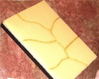
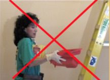
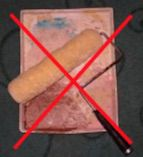
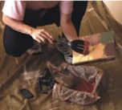
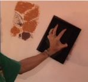
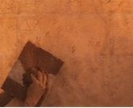
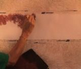
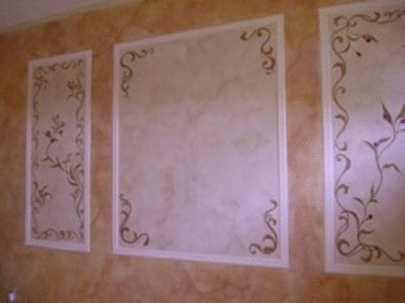

Included with Basic Faux Painting Kit.

Have you wanted to learn how to faux paint? Well now is the perfect time. With this innovative, patented faux finishing tool, learning popular Faux Painting Techniques like Old World Parchment, Color Washing, Faux brick, Faux Stone, Sponging, Ragging, Stripes, Clouds and even Stenciling in MULTIPLE COLORS can be achieved so easily.
Eliminate the need of messy rollers and other tools for applying paint or glazes on the walls. The Multi Color Faux Palette is so lightweight, you can easily carry it up a ladder. Say good-bye to dangerously carrying up multiple trays of glazes which other methods require. Now you just place your tool onto the palette and up you go on the ladder with ease.
Applying texture with a rag, sponge or brush is faster because you don't need to blot the tools on paper. Simply press your tool onto the palette and then onto the wall. You get just the right amount of glaze you need. In addition, you can faux paint up to 6 colors at one time.



No more blotting on paper or dangerously carrying up multiple trays. No more need to roll on the glazes.
Glazes or paints can applied with a spatula or brush and then applied to wall.
You can use sponges, rags and brushes with the palette, too. You get just the amount of paint or glaze you need.




Here are just a few samples of the many faux painting techniques you can achieve with the Patented (7572450) Triple S Faux System. The Multi Color Faux Palette is one of the 5 tools with DVD included in the Basic Faux Painting Kit.

Our BASIC KIT INCLUDES Multi Color Faux Palette, 2 Poofy Pads, 2 Tuck and Gather tools and Workshop DVD. It's now on sale for only $41.99 for a limited time.